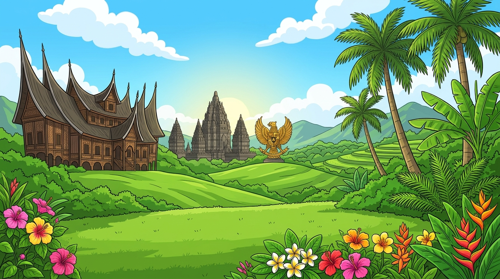
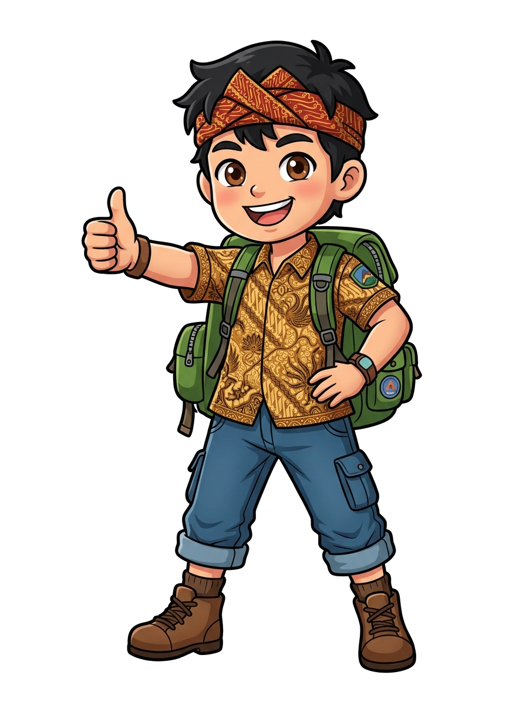
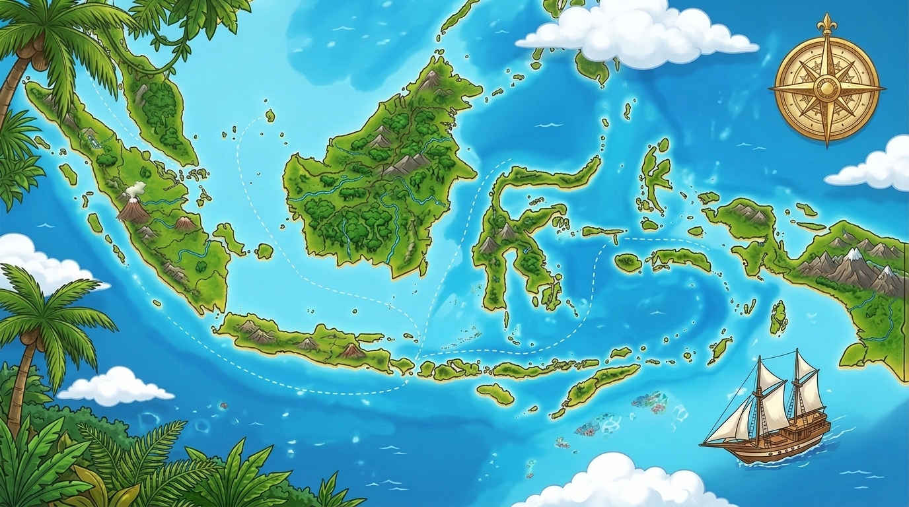
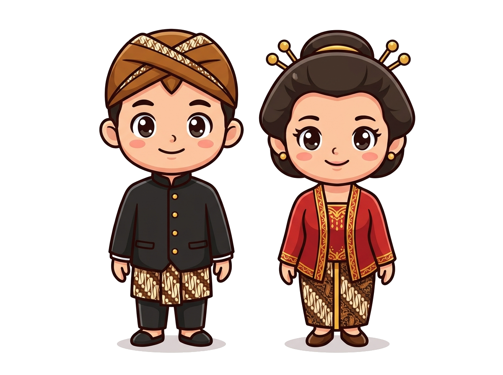

Sugeng rawuh! Kami Raden Bagus dan Dewi Sekartaji menyambutmu di Tanah Jawa. Mari lestarikan filosofi luhur, candi megah, dan keagungan batik keraton warisan leluhur!
Kamu telah menyelamatkan warisan luhur pusaka Nusantara!
Simbol kearifan luhur budi pekerti.
Lencana tersimpan di profil.